Sakib Shahriar
Ph.D. Candidate in Computer Science
Ph.D. candidate in Computer Science at the University of Guelph, specializing in AI, privacy of NLP & AI systems, large language models, and ethical AI, with a passion for teaching and innovative research.
Publications
Journal Publications
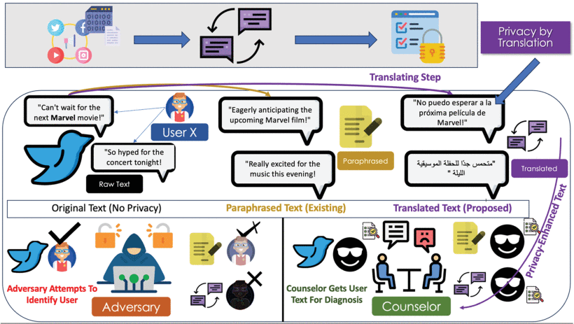
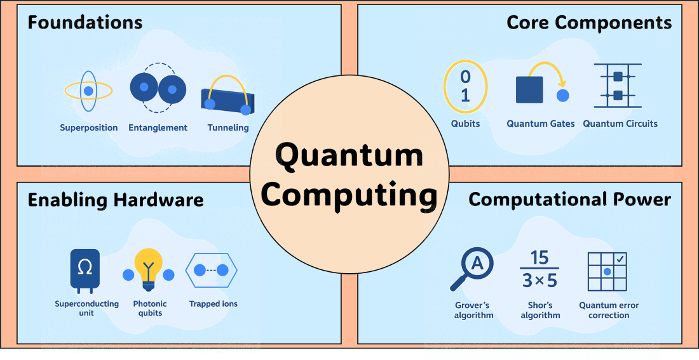
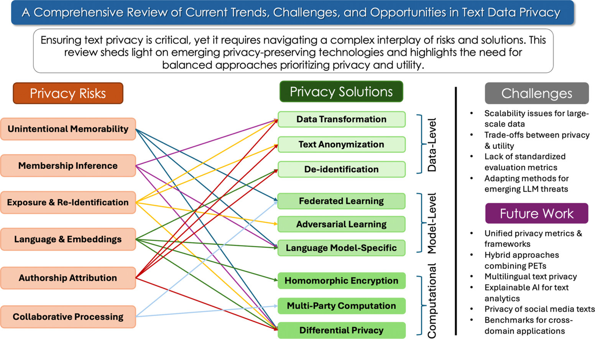
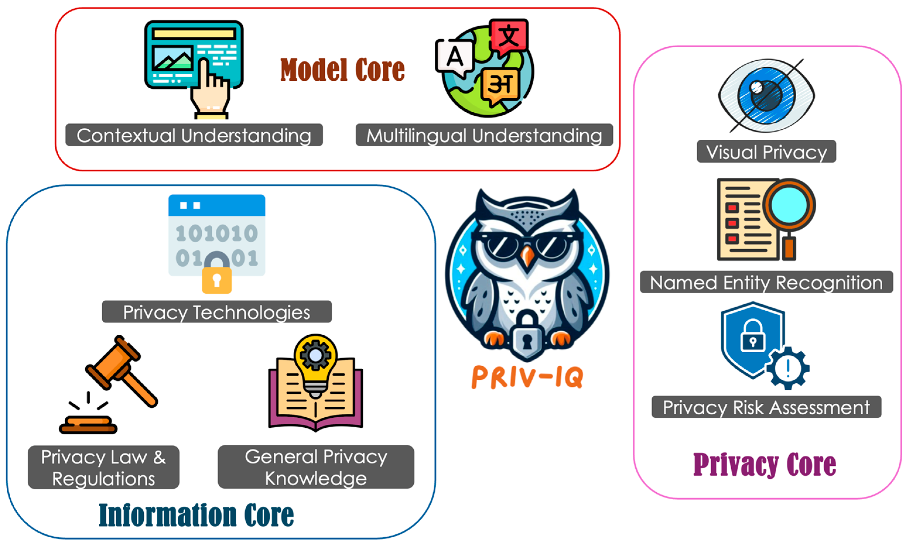
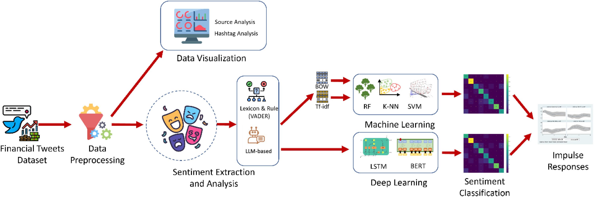
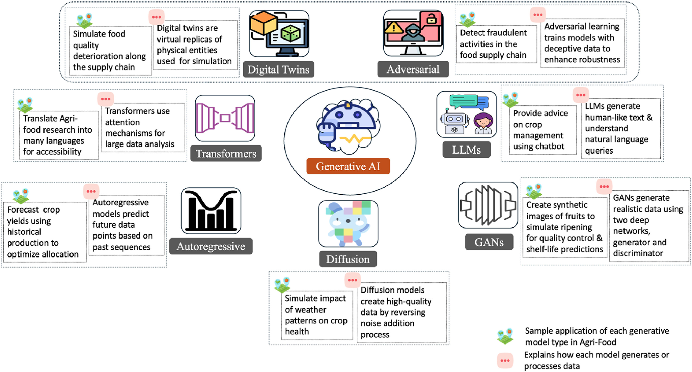
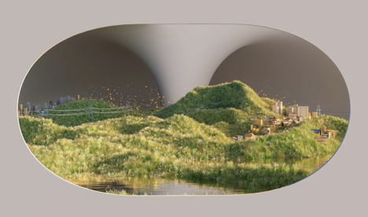
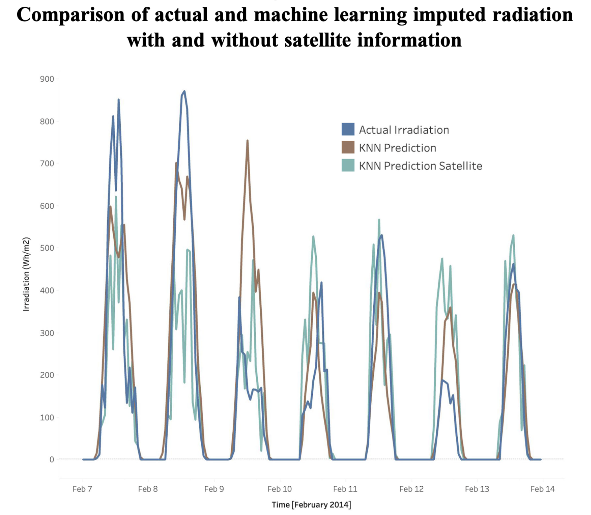
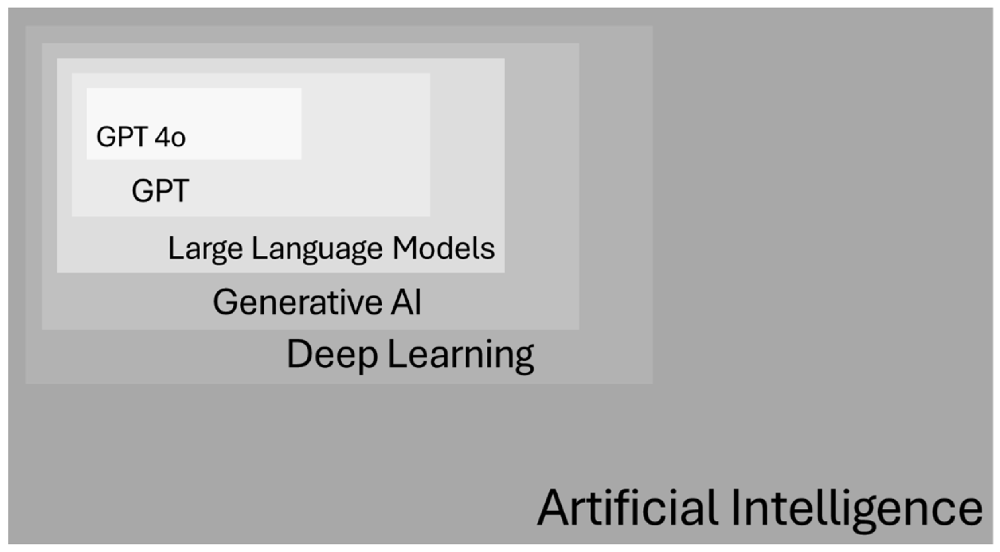
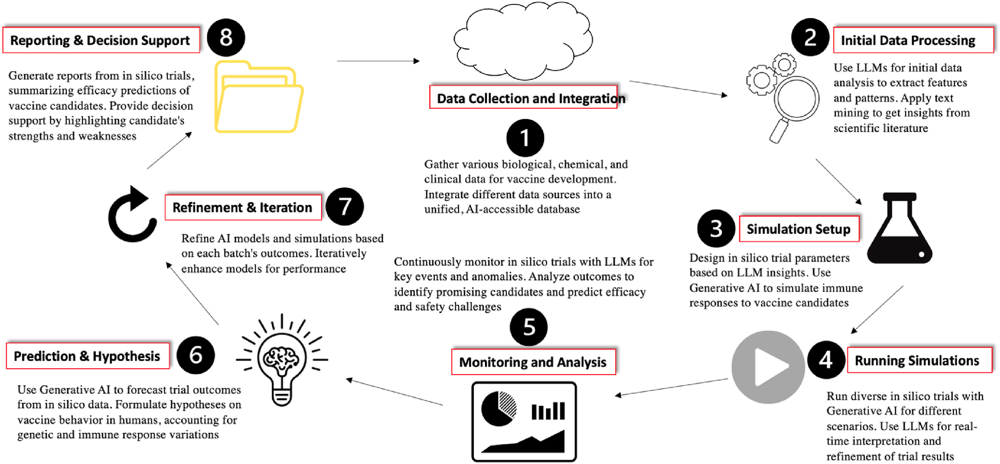
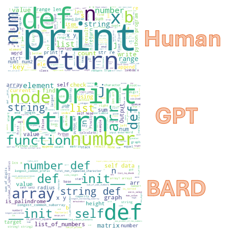
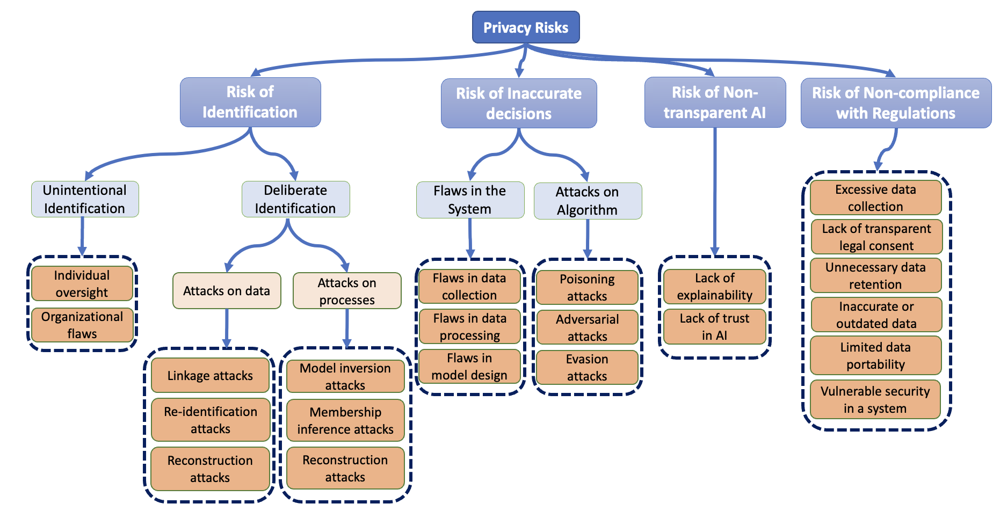
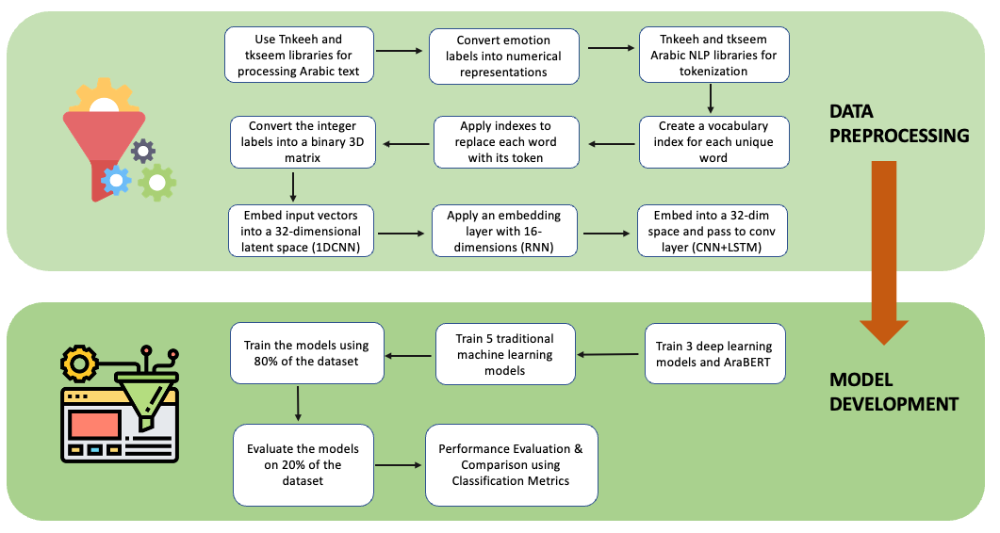
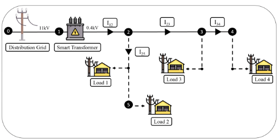
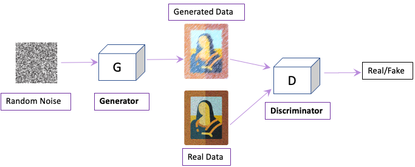
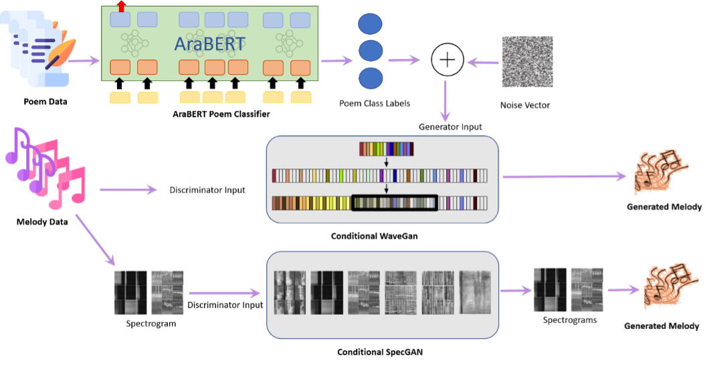
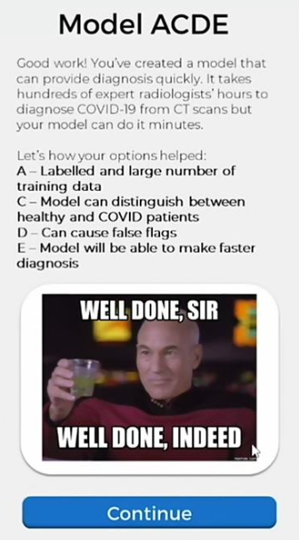
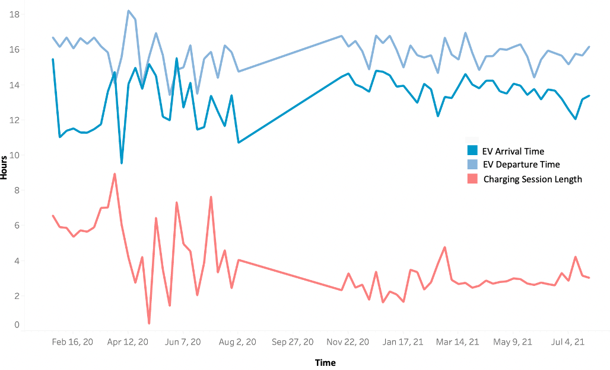
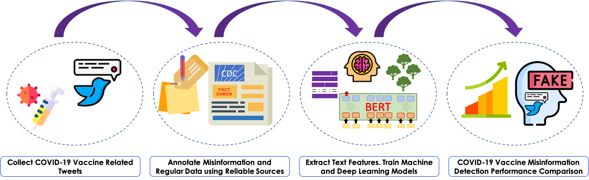
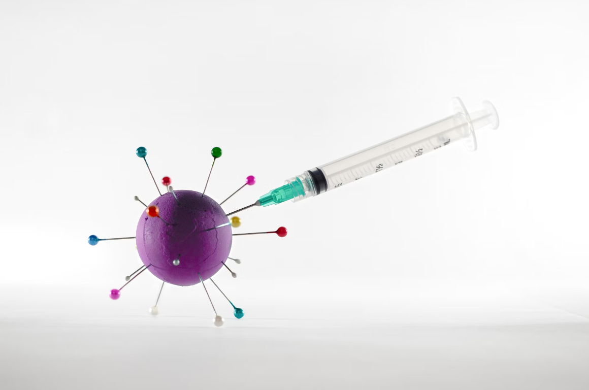
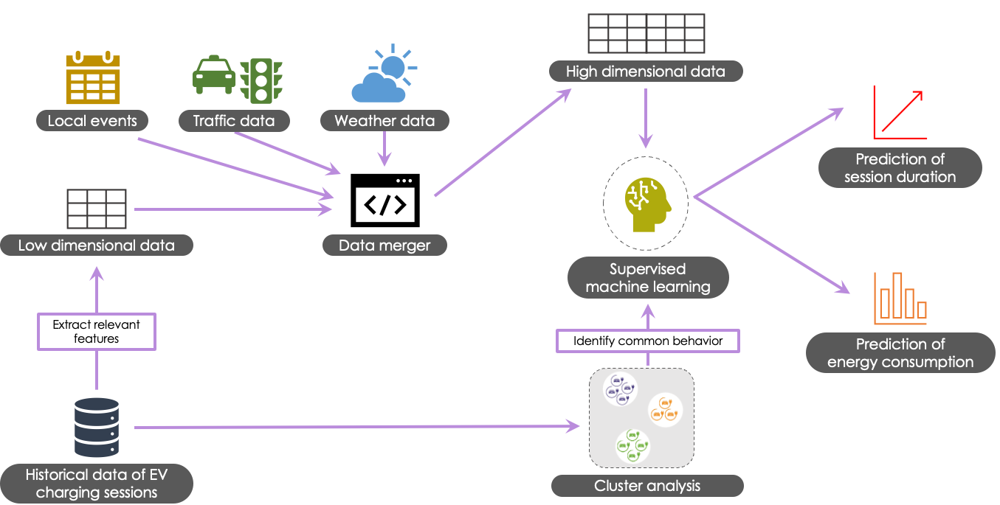
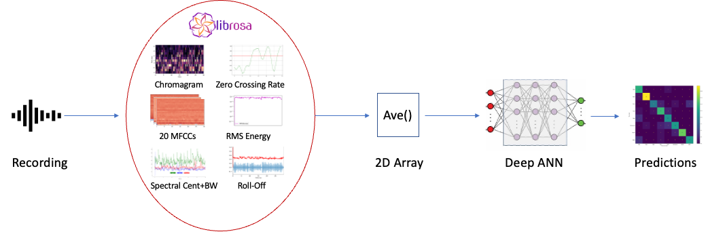
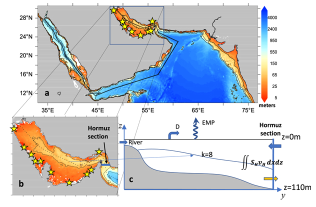
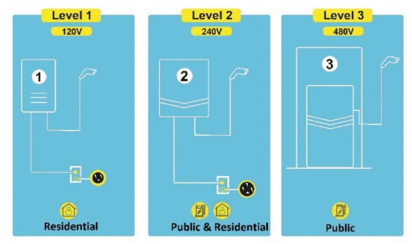
Conference Publications
-
[C1] Kadhim Hayawi and Sakib Shahriar. "Dear LLM, Why Are They Complaining? On Root Cause Analysis (RCA) In Customer Service Automation Using Large Language Models (LLMS)."
2025 IEEE 5th International Conference on Human-Machine Systems (ICHMS), pp. 338-343. IEEE, 2025.
DOI: 10.1109/ICHMS65439.2025.11154153 -
[C2] Kadhim Hayawi, Sakib Shahriar, and A. R. Al-Ali. "Ethical Considerations in Artificial Intelligence (AI) Applications in Smart Grid."
2025 7th International Youth Conference on Radio Electronics, Electrical and Power Engineering (REEPE), pp. 1-6. IEEE, 2025.
DOI: 10.1109/REEPE63962.2025.10971096 -
[C3] Sakib Shahriar and Rozita Dara. "PriSM: Privacy-Preserving Social Media Text Processing and Analytics Framework."
2024 IEEE International Conference on Data Mining Workshops (ICDMW), pp. 59-66. IEEE, 2024.
DOI: 10.1109/ICDMW65004.2024.00014 -
[C4] Kadhim Hayawi and Sakib Shahriar. "Care-by-Design: Enhancing Customer Experience through Empathetic AI Chatbots."
2024 IEEE International Conference on Data Mining Workshops (ICDMW), pp. 75-81. IEEE, 2024.
DOI: 10.1109/ICDMW65004.2024.00016 -
[C5] Kadhim Hayawi, Sakib Shahriar, and Hakim Hacid. "On Digital Art Generation Using Generative Adversarial Networks."
2024 International Conference on Electrical, Computer and Energy Technologies (ICECET), pp. 1-6. IEEE, 2024.
DOI: 10.1109/ICECET61485.2024.10698003 -
[C6] Kadhim Hayawi, Sakib Shahriar, and Hany Alashwal. "Leveraging Nucleotide Dependencies for Improved mRNA Vaccine Degradation Prediction."
2023 20th ACS/IEEE International Conference on Computer Systems and Applications (AICCSA), pp. 1-6. IEEE, 2023.
DOI: 10.1109/AICCSA59173.2023.10479233 -
[C7] Sakib Shahriar, Rozita Dara, and Kadhim Hayawi. "On the Impact of Deep Learning and Feature Extraction for Arabic Audio Classification and Speaker Identification."
2022 IEEE/ACS 19th International Conference on Computer Systems and Applications (AICCSA), pp. 1-8, 2022.
DOI: 10.1109/AICCSA56895.2022.10017889 -
[C8] Sakib Shahriar and Kadhim Hayawi. "NFTGAN: Non-Fungible Token Art Generation Using Generative Adversarial Networks."
2022 7th International Conference on Machine Learning Technologies (ICMLT), pp. 255-259, 2022.
DOI: 10.1145/3529399.3529439 -
[C9] Muhammad Arbab Arshad, Sakib Shahriar, and Assim Sagahyroon. "On the Use of FPGAs to Implement CNNs: A Brief Review."
2020 International Conference on Computing, Electronics & Communications Engineering (iCCECE), pp. 230-236, 2020.
DOI: 10.1109/iCCECE49321.2020.9231243 -
[C10] Felipe Vieira, Edmo J. Campos, Georgenes Cavalcante, Mohamed Abouleish, Sakib Shahriar, and Reem Mohamed. "Salt Budget in the Arabian Gulf and Effects of Water Desalination."
Ocean Sciences Meeting 2020. AGU, 2020. -
[C11] Imran Zualkernan, Michel Pasquier, Sakib Shahriar, Mohammed Towheed, and Shilpa Sujith. "Using BLE beacons and machine learning for personalized customer experience in smart Cafés."
2020 International Conference on Electronics, Information, and Communication (ICEIC), pp. 1-6, 2020.
DOI: 10.1109/ICEIC49074.2020.9051187
Education

University of Guelph
Research area: Privacy of NLP & AI systems
CGPA: 95.3% (4.0/4.0)

American University of Sharjah
Thesis: "Machine Learning-Based Approach for EV Charging Behavior"
Specialization: Machine Learning and Big Data Analytics
Concentration: Artificial Intelligence and Internet of Things
Senior Project: "An AIoT-based Smart Cafe System"
Teaching Experience
Graduate Teaching Assistant
University of Guelph, School of Computer Science
Facilitated with the instruction of Data Manipulation & Visualization, Theory of Computation, Analysis of Big Data, Software for Legacy Systems, Information Retrieval, Privacy in AI, Writing Support TA, and Software Architecture of AI Systems.
Graduate Teaching Assistant
American University of Sharjah, Department of Computer Science & Engineering
Supervised undergraduate labs, exams, and grading. Courses: Digital systems and FPGA design, Introduction to programming.
Teacher Assistant
American University of Sharjah, Department of Computer Science & Engineering
Assisted in facilitating Communications Network undergraduate course.
Workshops Conducted
Academic Writing Workshop for ENGG*3100 Engineering and Design III
University of Guelph, McLaughlin Library
Led two 90-minute, in-person sessions for ENGG*3100, guiding undergraduate engineers through constructing persuasive arguments while sharpening cohesion and clarity. Quick mini lessons on paragraph architecture, reverse outlining, and concision were paired with hands-on revision drills and peer critiques, enabling students to diagnose and strengthen their drafts in real time.
Writing the Literature Review Workshop for IDEV 3300: Engaging in Development Practice
University of Guelph, McLaughlin Library
Conducted a 50-minute in-person workshop for 30 undergraduate students in the College of Social and Applied Human Sciences at the University of Guelph. This workshop focused on developing and refining research questions, organizing literature, and integrating sources to create coherent and impactful reviews.
Invited Talks
-
The Use of AI for Effective Writing and Consultation
Professional Development session, McLaughlin Library, University of Guelph, 2024 -
Current Trends, Challenges, Solutions, and Research Gaps in Text Data Privacy
Doctoral Seminar Presentation, School of Computer Science, University of Guelph, 2023 -
Machine Learning-Based Approach for EV Charging Behavior: Current Trends and Prospects
Master Seminar, American University of Sharjah, 2021 -
A data visualization approach for the identification of faulty sensors in multiple ground weather station data
Research talk, R&D Department, Dubai Electricity and Water Authority (DEWA), 2020 -
Wildlife Management using Computer Vision
ADDATHON hackathon organized by ADDA (Runners up), 2019
Mentoring
Student Supervision and Mentorship
Ala Abu Hilal
Zayed University, Abu Dhabi, UAE
Ala successfully defended his Master's thesis in December 2022. I mentored his research work alongside Dr. Kadhim Hayawi, who was the primary advisor.
Reem Mohamed
American University of Sharjah, Sharjah, UAE
Reem completed her undergraduate thesis in February 2020. I supervised her experiments alongside Dr. Edmo Campos to find the impacts of salinity on coral larvae. Her work resulted in two publications.
Editorial and Academic Service
Committee Memberships
Committee Member, CWCA/ACCR 2026 Annual Conference
Co-developed and disseminated Call for Papers; advised on program formats and keynotes. Assisted with proposal reviews and selection of the Assistant Conference Chair. Supported conference operations (registration, tech, session moderation) and promotion.
Editorial Roles
Handling Editor
Frontiers in Robotics and AI
Perform initial technical and ethical suitability checks and desk-reject when appropriate. Coordinate timely peer review, inviting additional reviewers as needed. Mediate author–reviewer dialogue; ensure rigorous, fair editorial decisions.
Journal Review Boards
- IEEE Access Journal (2020 – Present)
- Computers in Biology and Medicine (2021 – Present)
- Journal of Ambient Intelligence and Humanized Computing (2022 – Present)
- IEEE Transactions on Network and Service Management (2022 – Present)
- Applied Intelligence (2023 – Present)
- PLOS One (2023 – Present)
Honors and Awards
-
School of Computer Science (SoCS) 2025 Summer Doctoral Scholarship, University of Guelph
April 2025 -
Braithwaite Conference Travel Grant awarded $2950 for presenting at the 2024 IEEE International Conference on Data Mining (ICDM)
November 2024 -
School of Computer Science (SoCS) 2024 Summer Doctoral Scholarship, University of Guelph
April 2024 -
SoCS Travel Grant awarded $1000 for presenting at the 19th International Conference on Computer Systems and Applications (2022)
January 2023 -
International Conference on Machine Learning Technologies (ICMLT) 2022 Best Paper Presentation Award
March 2022 -
2020/21 AUS Graduate Student Research, Scholarly and Creative Excellence Award, American University of Sharjah
June 2021 -
CSE Graduate Research Excellence Award, Computer Science & Engineering Department, AUS, 2020
April 2021 -
Full Graduate Research Fellowship, Office of Graduate Studies, AUS
September 2019 – June 2021 -
Graduate Teaching Assistantship, Computer Science & Engineering Department, AUS
January 2019 – June 2019 -
ODAA Pioneer Scholarship - AUS Alumni Pioneer
September 2018 – December 2018 -
Hamid Jafer Scholarship, AUS
September 2017 – June 2018 -
American University of Sharjah Undergraduate Scholarship, AUS
September 2014 – December 2018 -
Dean's List Scholarship, AUS
January 2017 – September 2017